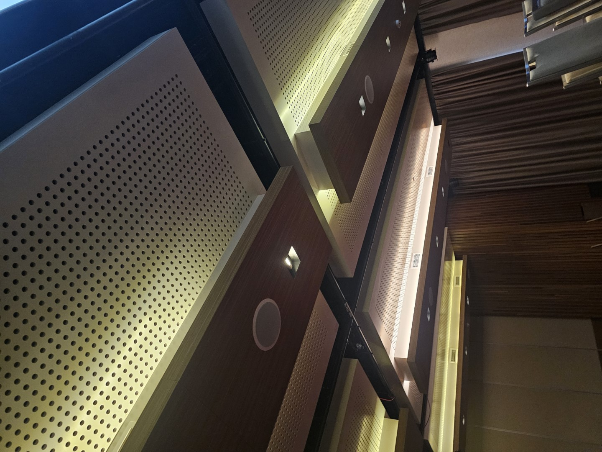
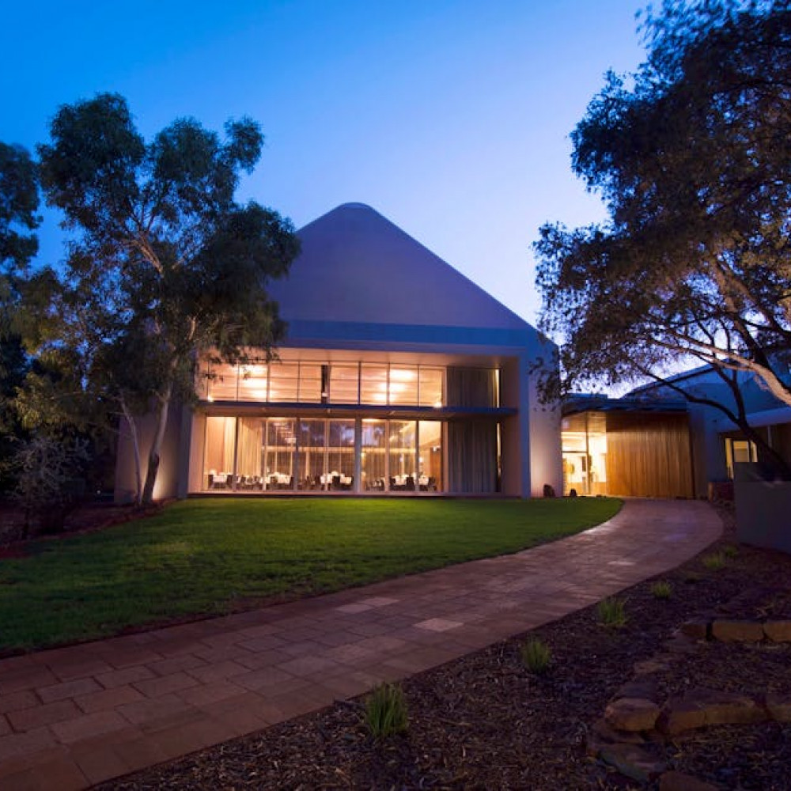
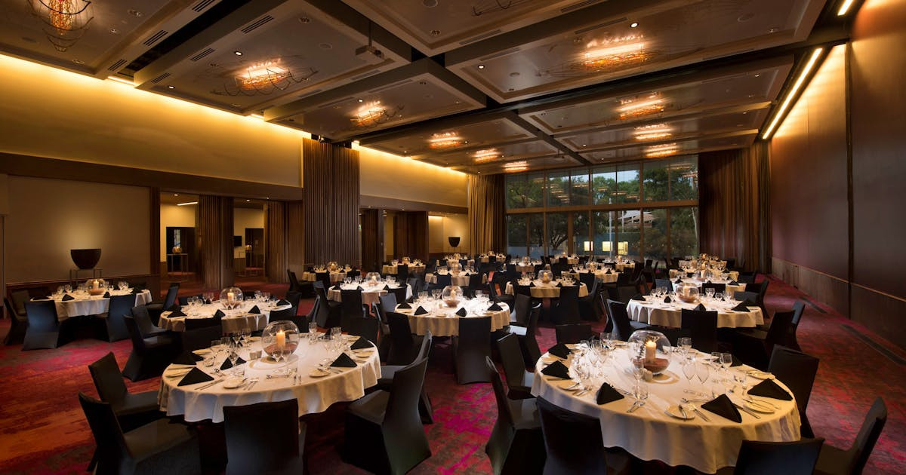
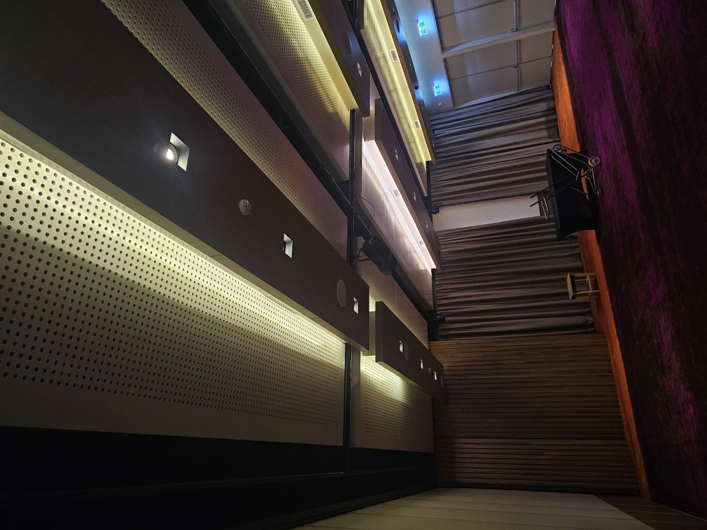
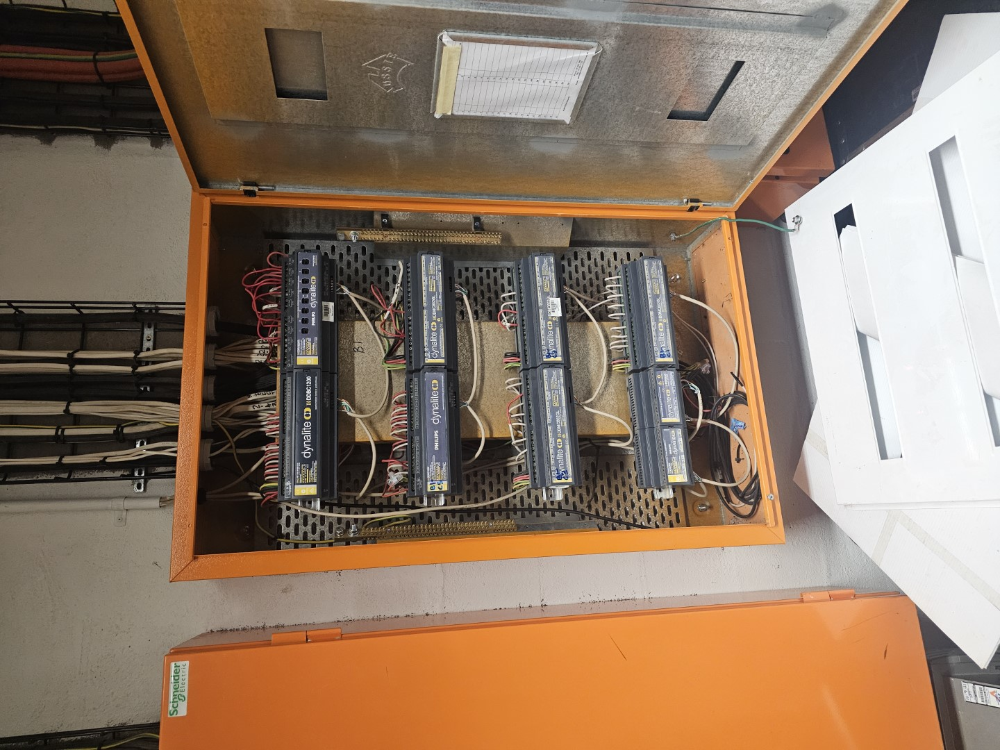

Modernise the control layer
The existing DSI approach was replaced with DALI as part of the Dynalite modernisation.
How Sydney Automation Co. delivered a Dynalite modernisation at Uluru Meeting Place, Ayers Rock Resort—replacing DSI with DALI and programming room-join scenes across the ballrooms and foyer entirely remotely.
Uluru Meeting Place is a major event venue at Ayers Rock Resort. The project required a lighting-control modernisation that could support changing room configurations and event setups across the ballrooms and foyer.
The existing DSI approach was replaced with DALI as part of the Dynalite modernisation.
Room-join scenes were programmed so the venue could support different event configurations.
The work was delivered entirely remotely from Sydney to the Uluru site in Yulara.

This project demonstrates the model SAC now offers for suitable national work: understand the system, define the programming scope, coordinate with the people on site and verify the result through a disciplined commissioning process.
Remote delivery is not a promise that every fault can be solved online. It is a way to bring specialist C-Bus or Dynalite expertise to a project when the system, access method and local responsibilities are clear.
The Uluru project combined a modernised lighting-control layer with programmed room-join scenes across the venue’s ballrooms and foyer, with the work delivered remotely from Sydney.




Tell us the platform, location, required change and who can access the system on site. We will assess whether remote programming or commissioning is suitable before booking the work.